データ削減
Data-Reduction
概要
Origin には、ワークシートのデータ削減に使用できるさまざまなツール（データフィルタ、ワークシートクエリ、さまざまな方法でデータ行の数を削減するいくつかのXファンクションなど）が用意されています。
必要なOriginのバージョン: Origin 2015 SR0以降
学習する項目
このチュートリアルでは、次の方法を学びます。
- XYデータを等間隔のXに削減
- XYデータセットの重複するXデータを削減
- グループごとにXYデータを削減
- ワークシートの行を削減
手順
等間隔なXにデータを削減
- 新しいワークブックを作成し、
 ボタンをクリックして<Origin EXE folder>\Samples\Graphing\ にあるSignal with High Frequency Noise.dat をインポートします。
ボタンをクリックして<Origin EXE folder>\Samples\Graphing\ にあるSignal with High Frequency Noise.dat をインポートします。
- 列Bを選択し、ワークシート：データ削減：等間隔Xを選択して、reduce_exダイアログを開きます。次のように設定を編集します。
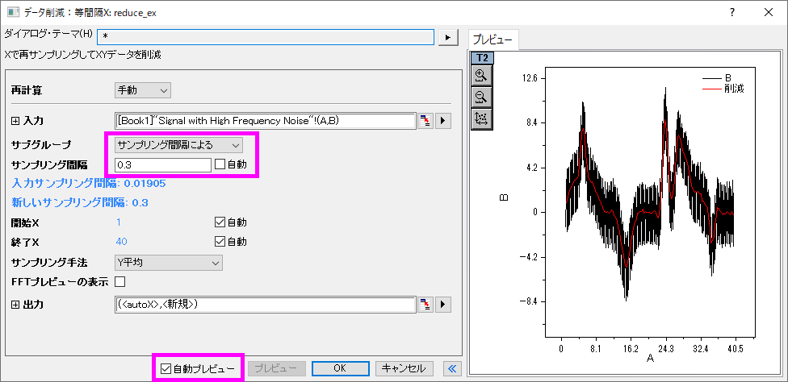
- OKをクリックします。新たな列（C列）がワークシートに追加されました。この列には独自のサンプリング間隔情報が含まれます。列ヘッダをクリックして列を選択してから、列：X列を表示を選択します。X列を表示：colshowxダイアログボックスでOKをクリックし、サンプリング間隔を使用してX列を生成します。サンプリング間隔が広く設定され、データが削減できたことがわかります。
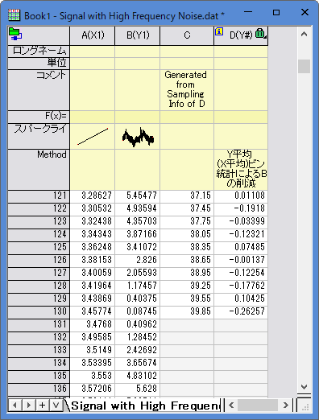
- Ctrlキーを押しながらB列とD列を選択し、
 ボタンをクリックすると、元のデータ（黒）および削減されたデータ（赤）の折れ線がプロットされます。
ボタンをクリックすると、元のデータ（黒）および削減されたデータ（赤）の折れ線がプロットされます。
- プロットから、データ量が大幅に削減されたことがわかります。
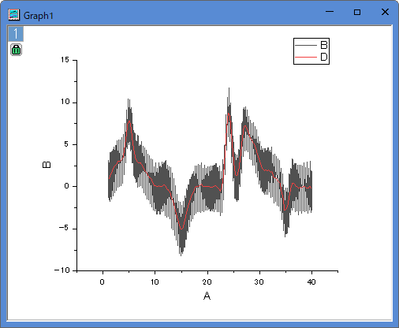
重複するXデータを削減
- 新しいワークブックを作成し、ボタンをクリックしてインポートウィザードを開きます。<Origin EXE Folder>\Samples\Curve Fitting\下のデータファイルStep01.dat、Step02.datおよびStep03.datを選択します。インポートモードを行の末尾に追加するに変更し、デフォルトのインポートフィルタstepが適用されていることを確認します。完了ボタンをクリックして、データをインポートします。
- 列AとBを選択し、ワークシート：データ削減：重複Xをクリックしてreducedupダイアログを開きます。次のように設定します。
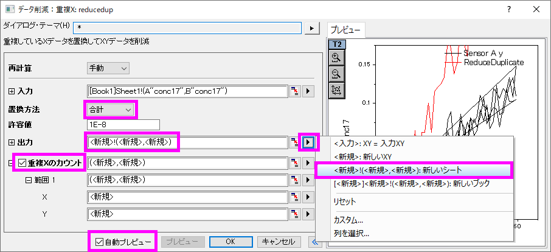
- OKをクリックして設定を適用します。結果シートSheet2では、重複したXデータの数がそれぞれ3であることがわかります。削減されたデータセットでは、重複したXに対するYデータにはすべてのYデータの合計値が入力されています。
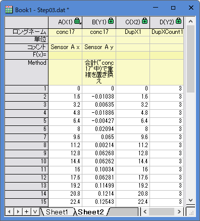
重複する行を削減/結合
- 前のセクションのSheet1に移動し、列Aを選択します。メニューのワークシート：重複行の削除を選択してwdeldupダイアログを開きます。重複の統合基準ドロップダウンリストから平均を選択します。出力ワークシートの右向き三角ボタンをクリックして<新規>：新しいシート選択します。出力カウントボックスにチェックを付けてOKをクリックします。
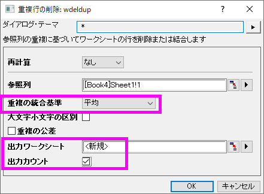
- ワークシートの行全体が統合した行の平均値に削減されます。この統合は選択した列の重複を元に行われています。結果ワークシートのwdeldupの最後に新しい列カウントが追加され、それぞれのX値に対する重複データの数が出力されます。
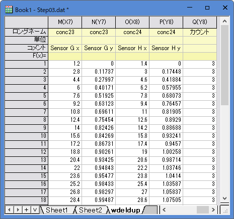
 | データ削減：重複XツールはXYデータセットに対してのみ使用できます。重複行の削除ツールはワークシート全体に対して使用できます。
列の統計ツールを使用して、XYZデータ中の重複XYデータを削減することができます。詳細はクイックヘルプを参照してください。
|
グループごとに削減
- 新しいワークブックを作成し、ボタンをクリックして<Origin EXE folder>\Samples\Data ManipulationにあるMagnetization.datをインポートします。
- A,B列を選択してボタンをクリックし、折れ線図を作成します。
- このグラフをアクティブにし、メインメニューの解析：データ操作：データ削減：クラスタX選択してreducexyダイアログを開きます。以下のように設定します。
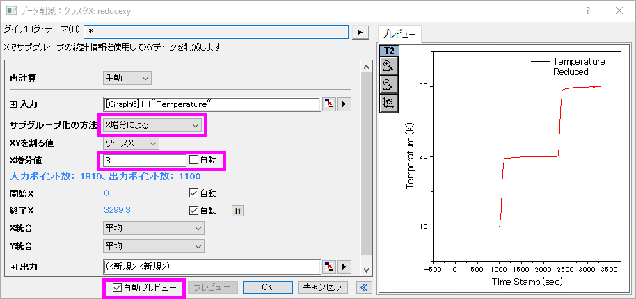
- OKをクリックしてデータ削減を実行します。削減されたXYデータセットは、元のワークシートの最後に2つの新しい列として追加されます。
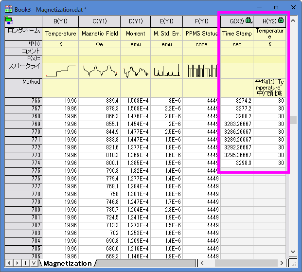
- グラフにも削減されたXYデータのプロットが追加されます。
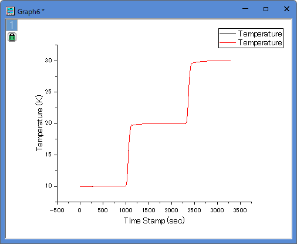
ワークシート行を削除
- 新しいワークブックを作成し、ボタンをクリックして<Origin EXE folder>\Samples\SpectroscopyにあるNitrite.datをインポートします。このファイルには6392個のデータポイントがあります。
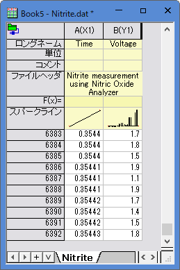
- Nitriteワークシートにある2列を選択して、メインメニューのワークシート：行の削減と選択し、wreducerowsダイアログを開きます。次のように設定します。
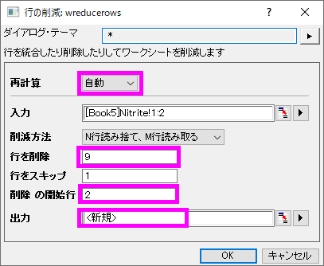
- Note: 出力ボックスの横にある右向き矢印ボタンをクリックし、<新規>：新しい列を選択すれば、削減されたデータが新たな列に出力されます。
- OKをクリックすると、10行ごとに最初の行だけが保持されます。データポイントの90%は破棄されます。残りのデータポイントは新しい列に出力されます。
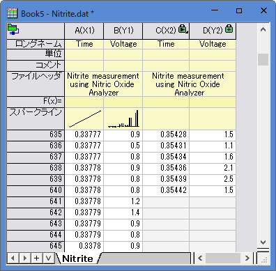
- ワークシート全体を選択し、ボタンをクリックして、元のデータ（黒）および削減されたデータ（赤）の折れ線グラフを作成します。
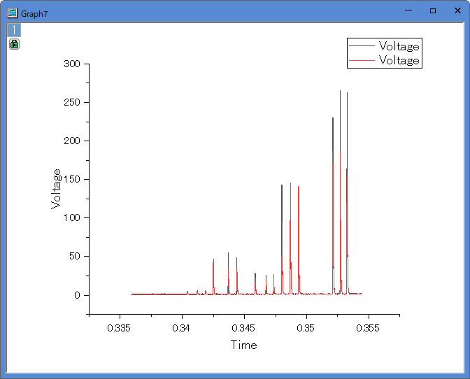
- データ削減によりピークの高さが変化しています。データの形状を維持するために、より多くのデータを残す必要があることがわかります。グラフ上の緑色の錠前アイコンをクリックしてパラメータを変更を選択して、wreducerowsダイアログを再度開きます。行を削除の値を 3に変更し、OKをクリックします。
- 今回は25%のデータポイントが保持され、グラフの形状も維持できていることがわかります。
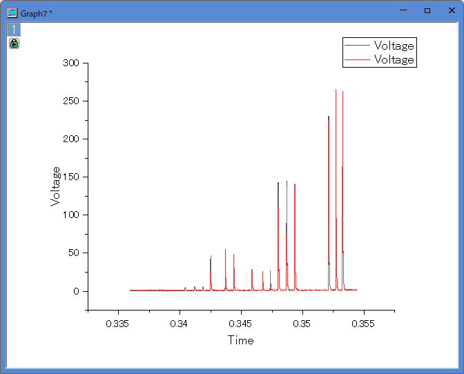